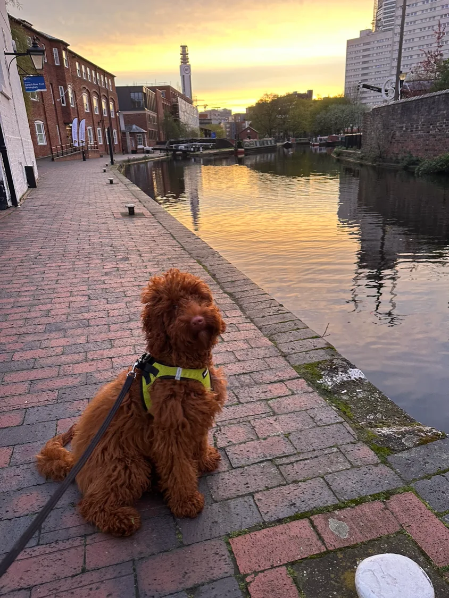
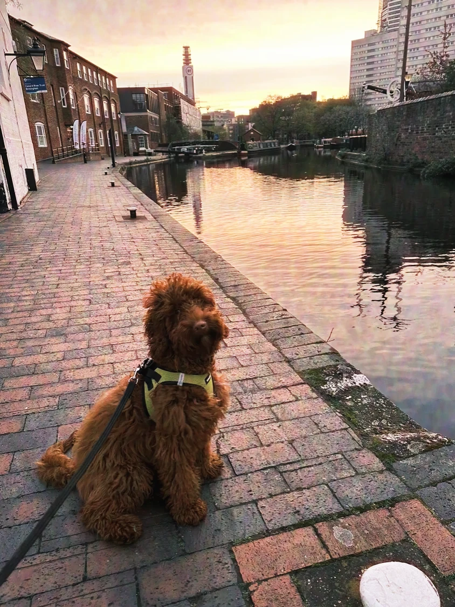
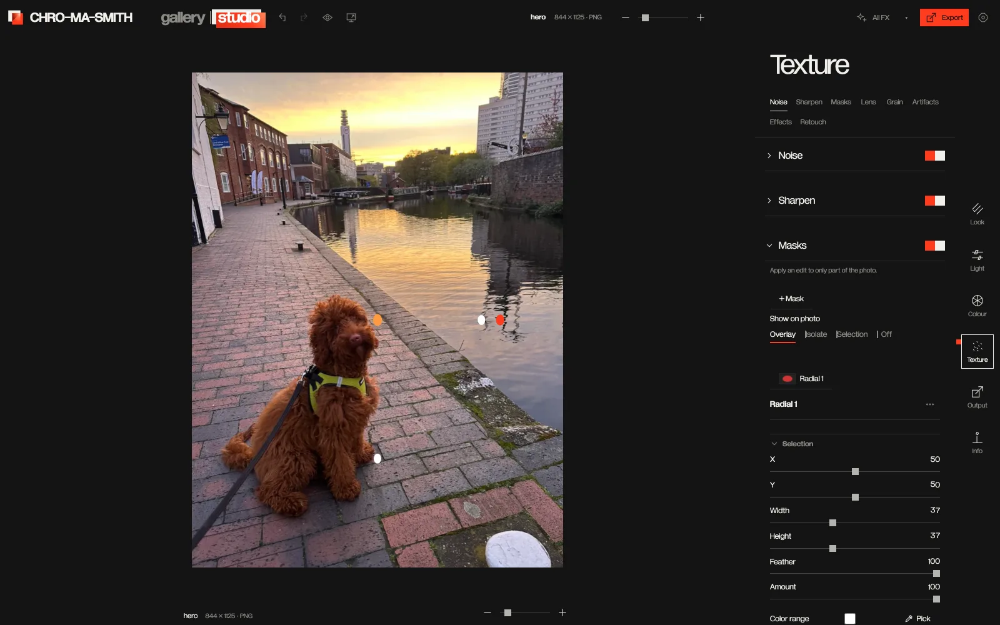
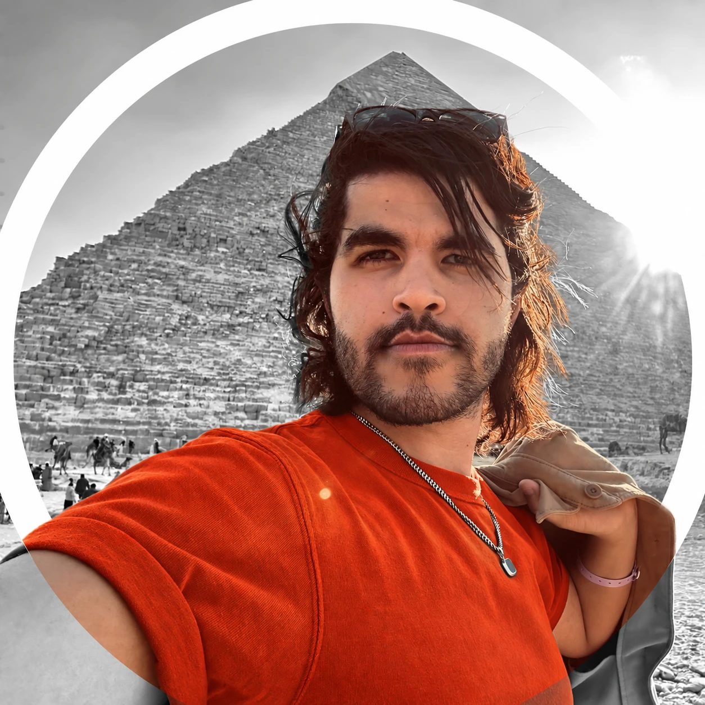

Film looks
0
A darkroom that lives anywhere
Scroll to enter ↓
00.0 — Index*Almost everything. Your ideas are still yours.


01.1 Library
A library for every shoot, every face, every almost-forgotten moment. All yours. All on your machine.
01.2 Studio
Start with a look. Then shape the light, colour and composition until the photo feels exactly right.

113 film looks. One click.
Find your starting point, then make it yours.
Film looks
Tools
Uploads
Offline
How one photo used to get finished
Subscriptions
Per month
Time
Quality
Prices are monthly subscriptions. Times and quality loss are illustrative: each export re-compresses the image.
With Chromasmith
Subscriptions
Per month
Time juggling apps
Quality
Colour, film grain, bloom, halation and borders happen in one pass on the original file, then export once at full resolution.

The designer
“I was too cheap to pay for subscriptions, too lazy to go through the whole multi-app workflow, and too unemployed, so I designed this app to turn my photos into masterpieces.”
Tareq Ameer · Dog father, pet photographer, and unemployed product manager
Every tool
Hover to light a tool. ClickTap a tool to see what it does.
View as a listIn beta now
Grade and trim a clip with the still-photo look stack, then export it with its audio intact.
BetaCombine night-sky frames into a cleaner image from the desktop library.
BetaStitch two photos into a wider view. Larger sets are still planned.
BetaStart with calibrated colour, cinema, instant, reversal or black-and-white looks.
Preview a look on your photo and apply it with one click.
Load a LUT you already own and use it as the starting look.
Add a print-film response after the base look.
Add grain shaped for formats from 8mm to 65mm.
Let bright edges glow into neighbouring dark areas.
Push halation toward a stronger, stylised glow.
Give bright areas a softer spread of light.
Layer procedurally placed dust, hairs and scratches onto the image.
Add warm film-like light intrusions and reshuffle their placement.
Finish with sprockets, rebates and edge printing.
Draw attention inward by shaping the edge brightness.
Save a finished editing recipe and apply it again later.
Brighten or darken the image without changing the chosen look.
Shape the separation between lighter and darker tones.
Adjust temperature and tint to make the colour feel right.
Click a neutral area to correct the colour cast.
Set a quick starting point for levels and white balance.
Draw the overall tonal response directly.
Shape the red, green and blue channels independently.
Adjust shadows, darks, lights and highlights with four controls.
Tune hue, saturation and luminance by colour band.
Tint shadows, midtones and highlights separately.
Recover clarity in flat or hazy scenes.
Quiet unwanted image noise while keeping useful detail.
Restore crispness at the level the image needs.
Recover detail softened by lens or sensor blur.
Keep bright regions gentler with filmic tone-mapping options.
Make a soft oval adjustment around a subject or light source.
Grade one side of the frame with a graduated transition.
Paint an adjustment exactly where it belongs.
Separate the sky for its own grade.
Select a subject from the photo for local editing.
Target pixels by colour rather than by location.
Target an adjustment to a chosen brightness range.
Use estimated scene depth to separate near and far areas on desktop.
Snap rough mask edges toward real image boundaries.
Even out patchy skin colour while keeping the image's character.
Keep eyes, lips and other facial details out of a skin adjustment.
Teach a subject from examples and find it again in other photos.
Blend away a spot before the film look and grain are applied.
Copy a source area precisely to repair the frame.
Reframe the photo for its final destination.
Change image orientation without leaving the editor.
Level the horizon manually or let the app find a dominant line.
Bring leaning lines back into shape.
Place the image inside a chosen border, aspect and background.
Place multiple images in adjustable rows, columns and grids.
Blend bracketed exposures into one image on desktop.
Combine frames focused at different distances on desktop.
Stack night-sky captures from the desktop library.
Stitch a pair of photos into one wider image.
Browse your archive on your machine without uploading it.
Move through folders, dates and curated groups of images.
Copy a shoot by capture date and make a verified second copy.
Add searchable words to describe and group photos.
Find repeated files while reviewing the library.
Pick the keepers from a shoot before editing.
Find and name faces with processing on your device.
Describe a photo in words and search locally for it.
Get on-device tag suggestions for a selected photo.
Keep more than one edit version of the same photo.
Work from a cached preview and apply the edit when the source returns.
Open a Lightroom photo in Chromasmith and return the result.
Browse connected Lightroom cloud photos from the desktop app.
Open camera RAW files and develop them locally.
Use camera colour profiles for more faithful RAW starting colour.
Convert Lumix V-Log material before grading it.
Load several images and switch between their previews.
Apply a look to the batch, then adjust an individual frame.
Align exposure and white balance across a shoot to one reference photo.
Check your grade against the original image.
Watch tonal distribution while you edit.
Inspect the full rendering pipeline at native image scale.
Move safely backward and forward through editing decisions.
Keep slider settings locally and return to them later.
Render the finished image at its original resolution.
Choose the output format that suits the job.
Export extended-range highlights from a RAW source.
Keep an edit record alongside the source file.
Save quality, format, resize and sharpening settings as a preset.
Build a reusable .cube look from two versions of one image.
Match a reference image's colour into a .cube LUT or XMP preset.
Tag a .cube file for a look you can take back to a Lumix camera.
Use the still-photo look stack on a video clip.
Choose the segment of a clip to export.
Keep the source audio without re-encoding it.
Read the clip's signal as you grade.
Check framing with overlay guides.
Ease the picture in or out of a clip.
Add restrained analogue motion to a graded clip.
Export the current video frame as a still image.
Open the app without installing a desktop package.
Edit with a touch-first tool sheet on a smaller screen.
Keep editing after the first load when the connection goes away.
Add the web app to your phone's home screen.
Move through a loaded batch with a touch gesture.
Press and hold on mobile to check the original.
Keep your photos on the device where you edit them.
Open the free, open-source app without signing in.
FAQ
Yes. It's free, open-source software under the GPL-3.0 licence. There's no account, subscription or paywall.
No. Everything runs on your device, in the browser or the desktop app. Your photos never leave your machine.
The web app has the full editor: looks, film effects, colour tools, masks and export. The desktop app adds the photo library, card import, on-device search, face tagging and the desktop-only tools such as HDR and focus stacking.
Yes. After the first load the web app keeps working without a connection, and the desktop app never needs one.
Camera RAW files are decoded locally, with camera colour profiles for Panasonic Lumix bodies. JPEG, PNG and TIFF open everywhere.
Yes. Load any .cube LUT as a starting look, or build your own .cube from a before/after pair or a reference photo.
Chromasmith isn't on the App Store yet. Download the .ipa and install it with a third-party signing service such as Flarestore. Or add the web app to your home screen, which needs no signing.
Open the full feature list. Every tool, grouped by what it does, with a one-line description.
Yes. A Windows installer is published alongside the Mac release.
The whole editor is one HTML file with plain JavaScript and no framework or build step. Rendering runs on WebGL2, with GLSL shaders for the look, grain, halation, bloom and tiled full-resolution export. RAW files are decoded locally with LibRaw compiled to WebAssembly, plus Adobe DCP camera profiles. The desktop app is a Tauri shell with a Rust core and a local catalogue database, for Mac and Windows. On-device masks use ONNX Runtime models (EdgeSAM and SegFormer). Video uses mediabunny, the iPhone app is a Capacitor shell, and the film looks were calibrated with Python tooling. It works offline through a service worker, and the source is GPL-3.0.
Your photos. Your taste. Your machine. Free and open source, ready when you are.
For the full experience, download the desktop app: the local library, card import, on-device search and face tagging all live there.
Open the web app, tap Share, then “Add to Home Screen”. It opens full-screen and keeps working offline.
Open the web app, tap the ⋮ menu, then “Add to Home screen” or “Install app”.
Open the web app and use the install icon in the address bar, or bookmark it (⌘D / Ctrl+D).